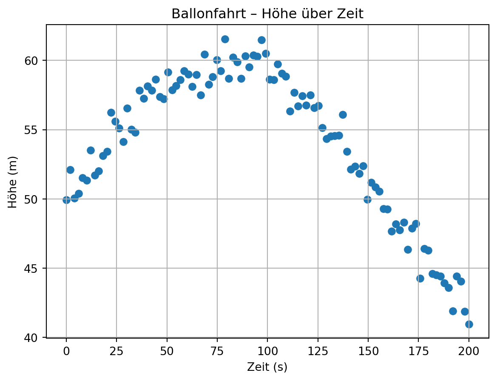
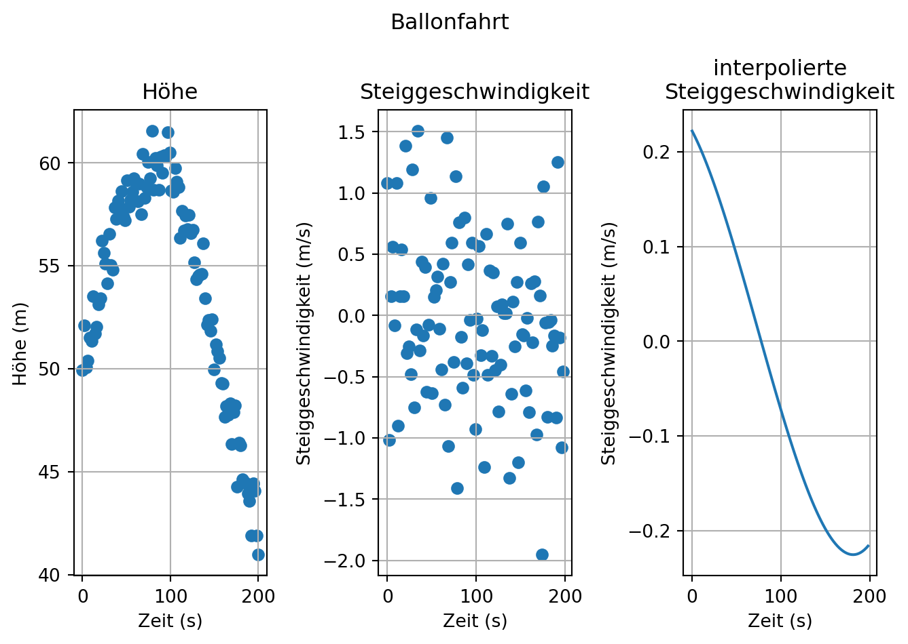

In der Datei ‘01-daten/messdaten-ballonfahrt.txt’ sind Messdaten zur Höhe eines Ballons während einer Ballonfahrt gespeichert. In der ersten Zeile der Datei sind die gemessenen Größen und ihre Einheit notiert.
# Dateikopf als String einlesenballon = np.genfromtxt("01-daten/messdaten-ballonfahrt.txt", delimiter=",", max_rows=4, dtype='str')print("Der Kopf der Datei:")print(ballon)
Der Kopf der Datei:
[['Zeit (s)' 'Hoehe (m)']
['0.0' '49.93175839467537']
['2.0202020202020203' '52.11727320291297']
['4.040404040404041' '50.0624468191306']]
Schauen wir uns die Daten einmal an:

Gesucht ist ein Polynom, das die Steiggeschwindigkeit, also die Änderung der Höhe mit der Zeit, des Heißluftballons beschreibt.
Schreiben Sie ein Programm, das:
die Höhe aus den Daten ausliest und die Steiggeschwindigkeit berechnet,
einen Fit der Steiggeschwindigkeit mit einem Polynom dritten Grades durchführt.
Stellen Sie die Höhe, die Geschwindigkeit und den Fit jeweils gegen die Zeit dar. Beschriften Sie die Achsen.
Anschließend berechnen wir die Steiggeschwindigkeit \(\frac{\Delta Höhe}{\Delta Zeit}\). Dazu verwenden wir die Funktion np.diff(). Diese berechnet die Differenz jedes Werts zu seinem Vorgänger ergebnis[i] = wert[i+1] - wert[i]. Für den i-ten Wert wird also keine Differenz berechnet und das Ergebnis ist um ein Element kürzer. Die Steiggeschwindigkeit in \(\frac{m}{s}\) ergibt sich aus dem Quotienten beider Reihen.
Mit numpy.polynomial.polynomial.polyfit() berechnen wir erst ein Polynom dritten Grades und dann mit numpy.polynomial.polynomial.polyval() die gefitteten Daten.
# plottenplt.suptitle("Ballonfahrt")## subplot Höhe über Zeitplt.subplot(1, 3, 1)plt.scatter(zeit, hoehe)plt.title("Höhe")plt.xlabel("Zeit (s)")plt.ylabel("Höhe (m)")plt.grid(True)## subplot Steiggeschwindigkeit über Zeit## Länge des Arrays Steiggeschwindigkeit ist n-1plt.subplot(1, 3, 2)plt.scatter(zeit[1:], steiggeschwindigkeit)plt.title("Steiggeschwindigkeit")plt.xlabel("Zeit (s)")plt.ylabel("Steiggeschwindigkeit (m/s)")plt.grid(True)## subplot Polynom 3. Grades Steiggeschwinkdigkeit über Zeit## Länge des Arrays Steiggeschwindigkeit ist n-1plt.subplot(1, 3, 3)plt.plot(zeit[1:], fit_steiggeschwindigkeit)plt.title("interpolierte\nSteiggeschwindigkeit")plt.xlabel("Zeit (s)")plt.ylabel("Steiggeschwindigkeit (m/s)")plt.grid(True)plt.tight_layout()plt.show()

6.2 Übung: Balkenverformung im Bauingenieurwesen
Ein Träger wird in der Mitte belastet.
Beispiel für einen Versuchsaufbau Balkenverformung
Balkenverformung von Universität der Bundeswehr München. Das Werk ist abrufbar auf der Internetseite der UniBw M. ohne Jahr
Schauen wir uns die Struktur der Daten einmal an.
balken = np.genfromtxt("01-daten/balken-durchbiegung.csv", delimiter=",", max_rows=4, dtype='str')print("Der Kopf der Datei:")print(balken)
Der Kopf der Datei:
[['Position (m)' 'Durchbiegung (mm)']
['0.0' '-0.28820719619532215']
['0.20408163265306123' '-0.22193122300286544']
['0.40816326530612246' '0.013978362500916705']]
Die Durchbiegung wird an 50 Punkten gemessen. Glätten Sie die Daten und stellen Sie die gemessenen und die geglätteten Daten gemeinsam dar.
In der Spalte ‘E(MeV)’ ist die Energie eines Neutrons, das auf ein Ziel geschossen wird, in Megaelektronenvolt eingetragen. In der Spalte ‘sigma(mb)’ ist der Wirkungsquerschnitt, gemessen in Millibarn (mb), eingetragen. In der Spalte ‘Delta sigma(mb)’ ist die Unsicherheit des gemessenen Wirkungsquerschnitts, ebenfalls in Millibarn (mb), eingetragen.
Lesen Sie die Daten ein
Versuchen Sie die ersten zwei Spalten mit einem Polynom eines geeigneten Grades zu fitten und stellen Sie das Ergebnis graphisch dar.
Fitten Sie die Daten erneut, aber nutzen Sie dieses Mal Splines.
Stellen Sie das Ergebnis ebenfalls graphisch dar und vergleichen Sie mit den Polynomfit.
Was sind die Vor- und Nachteile der jeweiligen Varianten?
5.: Die Splines bilden die Daten exakt nach. Das kann ein Vorteil sein, wenn keine Glättung der Daten gewünscht ist. Das Polynom ist dagegen nicht exakt an die Daten angepasst. Dafür können alle Datenpunkte mit einer einzigen Modellgleichung approximiert werden.